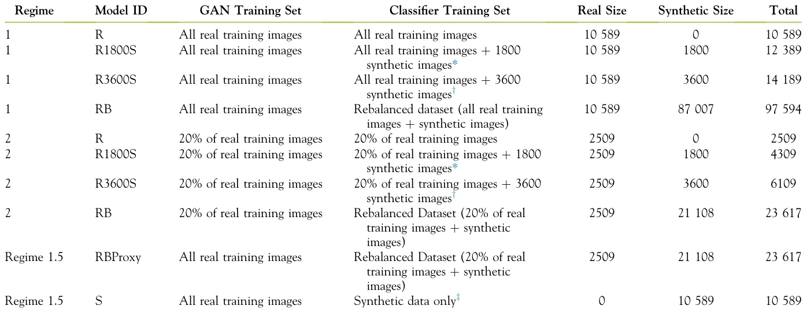
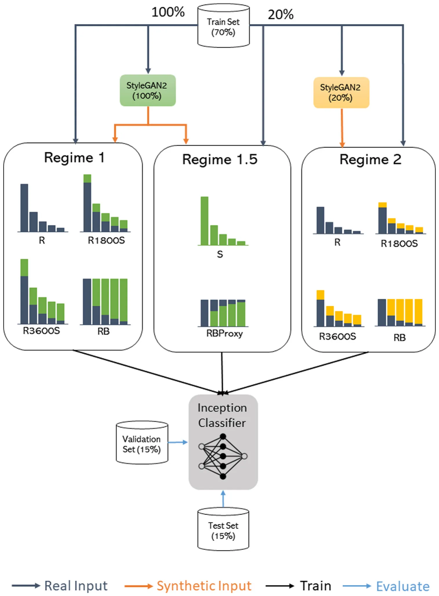
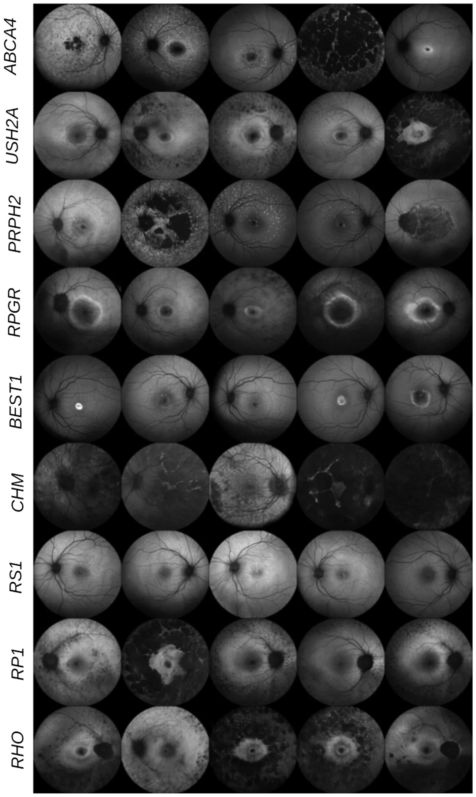
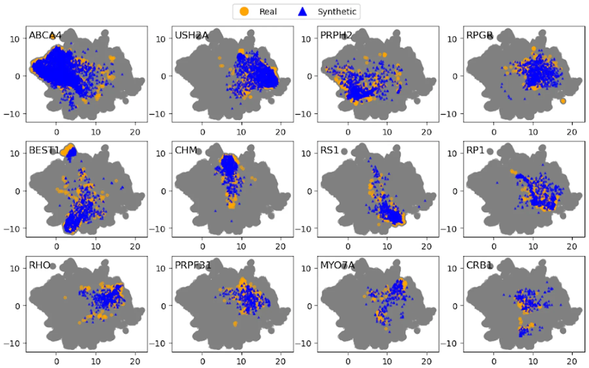
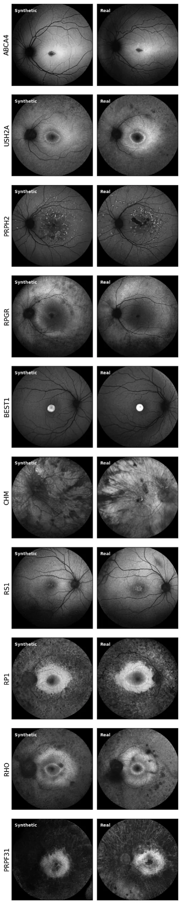
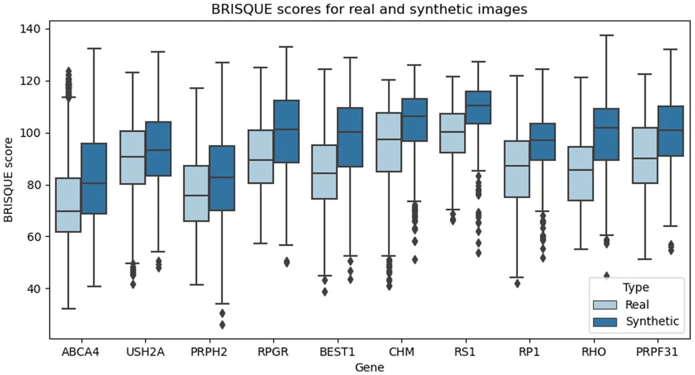
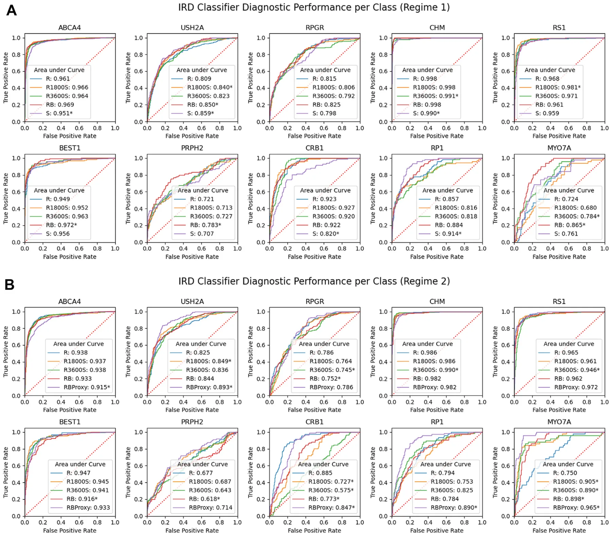

On this page
- Abstract
- Methods
- Ethics Statement
- Moorfields Eye Hospital IRD Dataset
- Implementation
- FAF Image Synthesis
- Synthetic Data Evaluation
- Subjective Visual Quality Evaluation
- Quantitative Evaluation
- DL Classifier Training with Synthetic Data
- Classifier Statistical Evaluation
- Code
- Results
- Visual Quality Evaluation
- Quantitative Evaluation
- BRISQUE Score Comparisons
- DL Classifier Performance
- Discussion
- Footnotes and Disclosures
- Acknowledgments
- References
Abstract
Synthetic generation of realistic IRD FAF images is feasible. Synthetic data augmentation does not deliver improvements in classification performance. However, synthetic data alone deliver a similar performance as real data, and hence may be useful as a proxy to real data.Financial Disclosure(s): Proprietary or commercial disclosure may be found after the references.
There is a lack of understanding of rare eye conditions due to their data scarcity and a shortage of experts familiar with these conditions, causing delays in diagnosis and disparities in access to care.1,2 A subtype of rare eye diseases are inherited retinal diseases (IRDs), a diverse group of monogenic retinal disorders causing visual impairment or blindness.3 A genetic diagnosis is considered crucial for the management and care of these conditions. With advances in retinal imaging technology, such as fundus autofluorescence (FAF) scans, gene-specific patterns of photoreceptor dysfunction and apoptosis in IRDs can be detected to help guide genetic diagnosis.4 However, this pattern recognition task remains challenging,5,6 since even in countries with wide access to genetic testing and dedicated eye genetics services, a genetic diagnosis is elusive in > 40% of the cases.7e10 Therefore, Decision Support Systems, in the form of deep learning (DL) based prediction models, may be of assistance.11e13 Recently, we developed Eye2Gene, a DL model that can assist a genetic diagnosis from input images of either FAF, infrared, or OCT modalities.14 While Eye2Gene was able to achieve expert-level performance (top-5 accuracy, 85.6%), we found that the performance of the classifiers is limited by the natural class imbalance in our IRD dataset, where gene-associated disease classes such as ABCA4 and USH2A are typical 10-fold more common than NRE23 and TIMP3 (Supplementary Fig 1).15 As a result of this imbalance, the prediction models tend to over predict common classes and under predict rarer ones.16
Common DL solutions to this problem include data augmentation via resampling techniques, random image transformations, and class reweighting schemes; however, their impact has been shown to be moderate on model generalizability.17 An alternative strategy is to expand the training dataset by generating synthetic examples of rarer classes using generative adversarial networks (GANs), a special type of DL framework.18,19 Generative adversarial networks are composed of 2 simultaneously trained neural networks: a generator, which creates a synthetic image using a random input in the form of a noise vector and a discriminator, which predicts whether the generator’s output is synthetic or real. Over multiple training iterations, the generator “learns” the complex distribution of real data, from which new images can then be sampled. This approach, which can be thought of as a more sophisticated version of data augmentation, allows us to represent more combinations of patterns within the dataset, potentially improving the generalizability of DL classifiers downstream.
Prior to GANs, synthetic retinal imaging studies have used mathematical models that describe the optic disk, the fovea, and particularly the vascular trees, a technique known as “retinal phantoms."20,21 In the last 3 to 4 years, synthetic image generation has focused on generative DL-based methods like GANs and Autoencoders.22-26 A notable GAN approach is Pix2Pix GAN, where a binary vessel tree map is fed as input and the synthetic image is generated with the same tree structure.27 While this approach can be effective, segmentation maps are time-consuming to obtain and not always available with datasets. Moreover, in diseases such as IRDs, where the blood vessels are not always clearly visible due to lesions, this approach is challenging.
The generation of synthetic pathological retinal images in the context of IRDs has not yet been explored, especially with reference to modalities such as FAF. Additionally, the evaluation of synthetic data quality is an ongoing challenge. Generally, most medical and GAN studies rely on a combination of qualitative and quantitative metrics. Qualitative evaluation involves evaluator-dependent visual examination of images and is mostly feedback or description-based.21,22 Quantitative metrics typically assess the images in terms of 3 criteria: visual fidelity, diversity, and generalization. Commonly used metrics that measure the distance between the feature statistics of synthetic images and real images are the Fréchet Inception Distance and Inception Score. These metrics, while theoretically valid, are difficult to interpret from a clinical standpoint.28,29 Finally, the clinical applicability of synthetic data is, to our best knowledge, an underexplored area in ophthalmology. Synthetic data could have potential applications for improving data access for efficiently developing predictive tools as well as medical education.
In our study, we investigate the applicability of synthetic data in DL-based classification of IRDs. Our study is the first, to our knowledge, to comprehensively evaluate the reliability and utility of GAN-generated synthetic FAF retinal scans in this domain.
Methods
Ethics Statement
This study was approved by the Institutional Review Board and the United Kingdom Health Research Authority (20/HRA/2158) “Advanced Statistical Modeling of Multimodal Data of Genetic and Acquired Retinal Disease” Integrated Research Application System project ID: 281957. All research adhered to the tenets of the Declaration of Helsinki.
Moorfields Eye Hospital IRD Dataset
As part of the Moorfields Eye Hospital (MEH) IRD cohort, previously described in Pontikos et al., 2020,11e13 genetic diagnoses and imaging studies including FAF, infrared, and OCT modalities were retrospectively studied for 4236 individuals who had attended MEH between May 2006 and May 2018. Patients received a confirmed genetic diagnosis from an accredited genetic testing laboratory. Our experiments focus on the subset of patients examined using FAF imaging. Fundus autofluorescence retinal scans were acquired following pupil dilation, achieved through the administration of 2.5% phenylephrine and 1% tropicamide. Images were acquired at a 55-degree field of view using a confocal scanning laser ophthalmoscope (Heidelberg Spectralis, Heidelberg- Engineering) with an excitation filter of 488 nm in automatic real-time mode.
For the DL experiments subsequently described, we investigated 36 genetic diseases comprising > 80% of the IRD dataset (Fig 1). Various preprocessing and quality control steps were performed beforehand to ensure the data are appropriately formatted for model development (Supplementary Fig 3). Following quality control, we had a dataset of 15 692 FAF images. In terms of the patient demographics, this dataset comprised of 1782 individuals from 1396 families across 16 different ethnicities, with majority of patients being of British origin (information on race was obtained from the hospital records). The average number of scans acquired per patient per gene ranged between 5 and 19 scans. Further details are provided in Supplementary Figure 4. For more information about the MEH IRD cohort, please refer to Pontikos et al. 2020.15 As part of the model development process, the dataset was divided into a training set of 10 589 images (70%), a validation set of 2650 images (15%), and a held-out (i.e., test) set of 2403 images (15%). This splitting was done through stratified sampling, in order to maintain a similar gene distribution across subsets and was also done by patient ID to avoid the same patient appearing in multiple subsets. The training set, specifically, was used for the GAN training and the subsequent classifier model training with synthetic images (detailed in section “DL Classifier Training with Synthetic Data”). The validation set was used to select the best model during training and the test set was used to evaluate the classifier’s performance, which is described in further detail in the section “Classifier Statistical Evaluation.” These subsets were kept the same for all classifier training experiments. We note, however, in our test set specifically, 4 rare classes representing 3% of the entire dataset were not covered due to the limited number of images in these classes and their exclusion during the sampling process.
Implementation
Our study consists of 2 components: (1) synthesizing artificial FAF images and evaluating their quality and (2) training a DL classifier using real and synthetic data to evaluate diagnostic performance.
FAF Image Synthesis
We trained a StyleGAN2-ADA model developed by NVIDIA- Labs, for creating synthetic retinal images (https://github.com/NVlabs/stylegan2-ada-pytorch). This model was primarily chosen due to its state-of-the-art image quality, short training time, and relatively low compute cost. Additionally, from initial experiments with multiscale gradient GANs, we found that the types of images generated were not diverse in terms of the types of lesions and anatomical structures (Supplementary Fig 5). Hence, we believed that StyleGAN2, due to its adaptation of elements from the neural style transfer domain, would be capable of higher-quality and higher-diversity image generation.30,31 Details on model training and hyperparameter selection are presented in Supplementary Table 1. Using our trained StyleGAN2 model, we generated new synthetic data by providing randomly sampled Gaussian noise vectors and the gene class indices.
Synthetic Data Evaluation
Currently, the most popular metrics for synthetic data evaluation include the Fréchet Inception Distance and Inception Score, which analyze image quality with reference to feature statistics computed over a set of synthetic and real samples. However, these metrics express the notion of quality into a single number for which there is no upper bound, which makes them difficult to interpret.28,29 Furthermore, with medical imaging data, it is essential that synthetic images are studied on a dataset and pixel level to ensure that samples are novel and clinically plausible and specific patient imaging features are not memorized. With that in mind, we put forward 3 primary considerations:
- Fidelity: Do the synthetic images have a visual appearance similar to the real images?
- Diversity: Is the distribution of the synthetic data similar to that of the real data?
- Generalization: Has the GAN generated novel images or merely copied the training images?
We use a panel of qualitative and quantitative approaches to answer these questions, which we describe subsequently.
Subjective Visual Quality Evaluation
To address question (1), we define a visually coherent synthetic image as one that experts, when not told it is synthetic, cannot confidently classify as synthetic. This is studied by conducting a Visual Turing Test with the help of specialists from MEH. Specifically, we developed a web-based quiz platform (https://syntheye.com/,1) for grading our images which was shared with 4 clinical experts, 2 junior, and 2 senior ophthalmologists with expertise in IRDs. The quiz presents a user with a real or synthetic image with 50% probability, which can be graded as “Real,” “Synthetic,” or “Unsure.” For our quiz databank, we focus on images from 3 disease classes, namely ABCA4, BEST1, and PRPH2, as these have distinct and well-studied imaging phenotypes that trained ophthalmologists can recognize. The genetic disease is provided along with the FAF image to the user for grading, as this can be informative. Adapting the terminology from Chuquicusma et al., 2018,32 we measure the True Recognition Rate (TRR) and Fake Recognition Rate (FRR). Fake recognition rate is the percentage of synthetic images that were classified as synthetic and TRR is the percentage of real images classified as real. Additionally, we study the interobserver agreement to see which images were often confused as real and which images were unanimously considered to be fake.
Quantitative Evaluation
For questions (2) and (3), we use a quantitative approach to compare the real and synthetic images. First, a novel synthetic dataset is generated, having the same class distribution as the training set of real images. Next, we train an InceptionV3 classifier to predict the genetic diagnosis based on a dataset of real FAF images.33 As an initial empirical test of whether the synthetic images were well represented by our GAN, we compute the confusion matrix of this classifier evaluated on the synthetic dataset. For a more detailed analysis, the penultimate layer activations of this model, which represent the high-level features relating to the disease, are used for comparing the images in feature space. We visualize these real and synthetic features in 2-dimensional (2D) using Universal Manifold Approximation and Projection (UMAP). This is a dimensionality reduction technique that is mathematically demonstrated to represent complex relationships between high-dimensional data in lower dimensions.34 We set the number of nearest neighbors to be 20 and the minimum distance to 0.99, which effectively visualizes the clusters representing the 36 classes in 2D, as determined from a simple grid search.
With the UMAP, however, the differences between the images in this abstract 2D are not always representative of the actual differences in images. To quantify the similarity between image features, we perform a similar test as in Coyner et al., 2021,35 using the Euclidean distance between the feature vectors (extracted using the InceptionV3-based feature extractor described earlier) in each class, comparing the distances between real and synthetic image features to the distances between real image features. As an additional test, we implemented the Learned Perceptual Image Patch Similarity metric. This is similar to our metric, in that DL-classifier based features are extracted and compared, except that the Learned Perceptual Image Patch Similarity classifier was specifically trained on a dataset of human-perceptual similarity judgments.36
Finally, as an objective metric of overall image quality, we compute the Blind/Referenceless Image Spatial Quality Evaluator (BRISQUE) score. This score is determined using pixel-based features, particularly image statistics relating to the local normalized luminance signals and neighborhood pairwise pixel relationships, which are determined using image processing.37 A lower value of BRISQUE indicates better perceptual image quality. To compare the synthetic and real image quality scores per class, we perform Levene’s test for equal variances between the groups, after which we report Welch’s t test to compare means.
DL Classifier Training with Synthetic Data
To investigate the impact of synthetic data in DL model training, we trained 10 different classifier models as shown in Table 1. All models are based on an InceptionV3 network pretrained on the ImageNet dataset, which are then fine tuned on our images.33 Details on the hyperparameter settings are shared in Supplementary Table 3. As a baseline, we train a model first on the training set of real images (“R”), which is the same training set used for the GAN development. Next, we vary the relative number of images per class by augmenting the baseline dataset with 1800 and 3600 synthetic images (We call these augmented datasets “R1800S” and “R3600S”). Next, we train a model on a fully rebalanced dataset (“RB”). This dataset is created by identifying the class with the largest number of examples (ABCA4, 25% of IRD dataset) and then augmenting the remaining N-1 classes to the same size as the majority class (N is the total number of classes). This results in a dataset of size N*M, where M is the number of images in the majority class. Additionally, we wished to study the impact of synthetic data augmentation in a much smaller real dataset, as this is a common scenario in medical imaging and DL model development. For this, we repeated the same experiments but with only 20% of the real data training set. This would allow us to check if the impact of synthetic data augmentation is correlated with real dataset size. Note that the GAN, in this scenario, is also trained on the subset of the training data. In summary, our first 8 training experiments comprise of 2 regimes: Regime 1, which uses the entire training set of 10 587 real images, and Regime 2, which uses a subset of 2509 real images. The last 2 experiments in Table 1, which we define as “Regime 1.5," study the value of synthetic data as a proxy to real data. Particularly, the first experiment “S” trains a model only on synthetic data, which is then compared against the baseline to assess if performance is similar. Empirically, this is to assess whether the synthetic data contain similar content as the real data that is valuable to the classifier. The second experiment, “RBProxy,” rebalances the real dataset from Regime 2 with synthetic data generated by the GAN in Regime 1. This is to assess whether synthetic data can be used as a data proxy, since the Regime 1 GAN trains on the entire training set, hence covering more image patterns than the Regime 2 GAN. A diagrammatic summary of all our experiments is presented in Figure 2.
Classifier Statistical Evaluation
Given that our holdout test set has an imbalanced distribution, our statistical evaluation of the above DL models was conducted per disease class. Specifically, we used a one-versus-rest stratification, where the multiclass classifier was defined as separate binary classifiers, i.e., Class 1 versus Not Class 1, Class 2 versus Not Class 2, and so on. With this approach, we then determine the receiver operating characteristic curves which describe the binary classifier’s skill under various classification thresholds. To summarize the performance, we determined the area under the receiver operating characteristic curve (AUROC) for each classifier, where a value of ≤ 0.5 represents a low-skill classifier and a value closer to 1 represents a perfect classifier. The overall performance of the model was determined by averaging the AUROC over all binary classifiers. Secondly, we computed Cohen’s Kappa for each model, which is useful as an overall measure of the agreement between the model’s predictions with the ground true labels. As per standard guidelines, a Kappa between 0 and 0.2 represents slight agreement, 0.21 and 0.4 represents fair agreement, 0.41 and 0.60 represents moderate agreement, 0.61 and 0.80 as high agreement, and 0.81 and 1 as substantial agreement. For the average AUROC and Kappa, we determined the 95% confidence intervals using stratified bootstrapping with 500 replicates. To compare the AUROCs per class for statistical differences, we used DeLong’s test. Lastly, we recognize that with our test set, the presence of repeat imaging may influence our results. Hence, as a simple sanity check, we perform the statistical analyses on a test set with only 1 image per patient. Specifically, we implement Wilcoxon’s signed rank test to compare the AUROCs between the full test set and the alternative test set.

GAN = generative adversarial network; ID = identification; R = baseline model; RB = rebalanced model; S = synthetic data trained model. *1800 images = 50 new images added per class. †3600 images = 100 new images added per class. ‡The synthetic data has the same size and class distribution as the training set.
Code
All experiments were conducted in PyTorch using four NVIDIA GeForce Ray Tracing Texel eXtreme (RTX) 3090 graphical processing units (GPUs). The codebase has been made open source under an MIT license at https://github.com/pontikos-lab/syntheye.
Results
Visual Quality Evaluation
Sample images for 9 different IRD classes generated by our trained StyleGAN2 model are presented in Figure 3. A larger grid of image samples for 36 classes is provided in Supplementary Figure 8. While most of our images were of reasonable quality, an initial visual inspection found some abnormal generations including images with poor exposure, noisy images, foreground leakage, and fragmented retinal vessels (see Supplementary Fig 9).
Our Visual Turing Tests conducted with experts from MEH found the average FRR and TRR to be 47% and 63%, respectively, with per-user results showing a large variability (see the confusion matrix in Supplementary Table 4). When excluding the images that were skipped (i.e., images that the doctors marked as “Unsure”), we found the FRR and TRR to be 53% and 69%, respectively. These results indicated that while the doctors could reasonably distinguish real images as real on average, a considerable proportion of synthetic images were classified as being realistic. For an unbiased result, we additionally computed the Fleiss Kappa (k) score to determine the interobserver agreement for the real and synthetic images, finding k = −0.012 for the real images and k = 0.027 for the synthetic images. Therefore, there was poor agreement between the experts. With respect to the synthetic images only, Supplementary Figure 10 shows images in the quiz which were unanimously agreed by experts to be either synthetic or realistic looking.
Quantitative Evaluation
Feature Space Analysis. The feature space visualization using UMAP is shown in Figure 4 for 12 different IRD classes. The results for all 36 classes are in Supplementary Figure 12. We found that our synthetic images contain class-specific features that overlap with the real data. Especially, we saw a significant degree of visual overlap in the rarer classes, which suggests that our SynthEye GAN is able to learn the distribution of the rarer cases. Additionally, we provide the confusion matrix for the classifier evaluated on the synthetic dataset (Supplementary Fig 13).

Image Similarity with Training Set. Comparing pairs of synthetic and real feature vectors using the Euclidean Distance, we identified the most similar pair with a distance of 8.85. In contrast, the real images, when compared with each other (disregarding identical real images), had a minimal distance of 0.65. This finding suggests that the most similar pair in the real-versus-synthetic comparisons is still not as similar as in the real-versus-real cases. Hence, the generated synthetic images are not copies of the real dataset images. We further validated this by examining some real-synthetic pairs in Figure 5. While the synthetic images share a similar grayscale profile and structure to their real counterparts, there are differences in the vessel trees and subtle differences in the lesions, showing that the synthetic images are not exact copies. Comparatively, we found that the Learned Perceptual Image Patch Similarity metric was not as useful for detecting structurally similar cases as it mostly picked the noisier and poorer quality images as similar. These results are shown in Supplementary Figures 15 and 16.


BRISQUE Score Comparisons
The distribution of BRISQUE scores for the synthetic and real datasets is compared in Figure 6 (see Supplementary Fig 18 for all 36 classes). The overall quality of the synthetic data is significantly lower than that of the real data (P < 0.05) for all classes, as indicated by the higher BRISQUE score of the synthetic data.
DL Classifier Performance
The receiver operating characteristic curves for the DL classifiers trained with different datasets in Table 1 are presented in Figure 7 for 10 classes (see Supplementary Figs 20 and 21 for full results). The results for AUROC and Cohen’s Kappa when averaging over all classes are presented in Table 2. Comparing the AUROC for the real and rebalanced model for Regime 1, we find that both models have similar AUROCs, indicating no change in performance. The Kappa values also show minimal change, indicating that both the real and rebalanced models have a similar level of agreement with the true labels. With Regime 2, we observe similar results, which demonstrate that the impact of the synthetic data augmentation is not correlated with real dataset size. However, we do find that the model trained only on synthetic data achieves similar diagnostic performance on the test set as the model trained on the real dataset. These findings, combined with the findings from the augmented datasets, suggest that our synthetic data do not degrade classifier performance. Furthermore, comparing the Regime 2 RB performance with the RBProxy model, we see a significant improvement in the average AUROC (0.80 e0.89). Finally, our sanity check with the smaller test set having 1 image per patient finds no significant difference in the results for most models (P < 0.05, Wilcoxon’s signed rank test), which indicates that the repeat imaging samples in our test set do not cause overoptimistic performance in our models. For further reference, we provide the confusion matrices for our models in Supplementary Figures 22-31.
Discussion
The natural class imbalance in rare disease datasets such as IRDs causes DL models to be biased towards the more common diseases. Our study investigates a data-centric approach to address this problem by augmenting datasets with GAN-generated images of rare diseases. We first acknowledge that with our dataset, there are several confounding factors such as repeat imaging samples per patient, the differences in genetic etiology of the IRDs in the represented individuals, and the correlations between individuals from the same family, that can bias our DL algorithms towards particular groups. From our experiments, we conclude the following: (1) SynthEye has the ability to generate synthetic IRD images of high visual fidelity, (2) SynthEye generated images are similarly diverse like real images and are not exact copies of real images; therefore, they are appropriate for downstream analysis tasks, but, (3) synthetic data augmentation does not improve downstream IRD classification performance. However, training models with synthetic data alone provide a similar classification performance as real data and could potentially be used as a proxy for real data.

Our Visual Turing Test conducted with clinical experts found an average FRR of 47% and TRR of 63%. This means that 47% of the synthetic images in our quiz were correctly classified as synthetic. The remaining 53% consisted of synthetic images which the graders were unsure about (11%) or incorrectly classified as real (42%). As a comparison to this result, the TRR indicates that 63% of the real images were identified as real. These results suggest that our images are of a reasonable quality that is appropriate for downstream analysis tasks; however, we also note that our data are not impeccable in terms of the retinal anatomical structures. One artifact we do find to be problematic are the blood vessel discontinuities (Supplementary Fig 9), which are potentially due to the patch-based processing by convolutional operators of the generator network which lack oversight of the global structure of the vessel tree. Typically, this would be addressed via a Pix2Pix strategy using binary images of vascular trees as input to the GAN; however, this is not available with our dataset. Alternatively, enforcing a global coherence in the “vessel” tree through a vessel-ness based objective function may address this artifact. Unpaired image translation methods (CycleGAN) may also be worth exploring as we can use vessel trees from domains other than IRDs.38 Other image quality issues identified in the synthetic dataset, such as low exposure and background leakage (Supplementary Fig 8), are most likely due to the retention of poor-quality images even after the data cleaning process, which the GAN learned to reproduce. Some of these issues could potentially be fixed through postprocessing methods such as applying a circular mask to remove background leakage or rescaling low-exposure images. At a broader level, we also note that our qualitative evaluation is highly subjective, as seen by the large variance in the quiz scores and negative k between evaluators. Especially with IRDs, even the relatively common ones like ABCA4, PRPH2, and BEST1, which were tested in this quiz, can have overlapping phenotypes and outlier cases, which may confuse trained ophthalmologists. With this in mind, further qualitative studies with a larger panel of ophthalmologists are crucial to obtaining a stronger consensus on the synthetic data quality.

In order to compare our synthetic and real data more concretely, we additionally used quantitative approaches. Due to the lack of a widely adapted quantitative metric for evaluating synthetic data quality, we primarily focused on feature space analysis using UMAP visualization and similarity analysis with the Euclidean distance to detect memorized images. Overall, our SynthEye-generated images showed similar feature content to real images, as evidenced by the overlap between real and synthetic features in the UMAP in Figure 3. However, we notice that many of the disease classes overlapped in the feature space, suggesting that it is possible for the GAN to incorporate information from similar classes. This is expected to some extent, considering that distinct IRD genes can still have similar imaging phenotypes, for example in the retinitis pigmentosa genes RPGR, RP1, and RHO. A naive solution may be to train a separate GAN for each class, although this can be computationally expensive with several classes. Another strategy would be to attach an auxiliary classifier to the GAN’s discriminator by incorporating a penalty function into the loss function such that the generator is penalized for generated images that do not contain the specific features of that class.
Similarity analysis found that the synthetic data were not memorized as the smallest Euclidean distance between real and synthetic images was larger than when comparing real images with themselves. While this is a simple empirical test for detecting image copies in the synthetic dataset, it does not necessarily imply that GAN will always produce novel images. In fact, studies have demonstrated that GANs can potentially memorize images or even capture subtle attributes depending on dataset size and training duration.39,40 Hence, further investigation into automated evaluation methods that specifically rely on (computationally extracted) retinal anatomical features as guides may be worth exploring.
Finally, we study the impact of synthetic data augmentation for DL-based IRD diagnosis by comparing the DL model performance when trained on several types of augmented datasets. While our experiments alleviate the class imbalance in the dataset, we remark that this strategy combines existing features represented in real images, and does not introduce new information about the diseases. In this regard, we consider synthetic augmentation to be a more sophisticated version of traditional data augmentation and resampling, which are typically done in limited data scenarios. From our experiments, we found that synthetic data augmentation provides no significant improvement in the average AUROC score, indicating that the diagnostic ability of the classifier is similar across all dataset types. The Cohen’s Kappa values, which describe the overall agreement between predictions and ground truth, also show no change across the different models. Despite this, we see that performance is not degraded when using synthetic data in both training regimes, which demonstrates that our synthetic images retain similar content as the real images. Our RBProxy model, in particular, demonstrates this positive finding as we notice an AUROC improvement from 0.80 to 0.89 when combining the limited real data from Regime 2 with synthetic data generated in Regime 1. This leads us to believe that synthetic data can be useful as a proxy for real data.

Our results with SynthEye prompt further research into the beneficial applications of synthetic data in IRD model development. Aside from addressing the aforementioned issues in our image generations, we hope to further study the benefits of synthetic data generators in a federated learning setting. Specifically, rather than trying to gain direct access to external IRD datasets, synthetic data generators can be trained on these real datasets and then used for downstream AI model training. This will allow for multi-institutional data access in a privacy-preserving manner. Recently, diffusion models have also grown popular within the image synthesis community due to their ease to train high-resolution high-quality images, which may make them a suitable alternative to GANs.41 Considering the biases in our dataset, we also aim to improve our synthetic images by incorporating prior knowledge like the mode of inheritance, age, and
| Regime | Model | Average AUROC (95% CI) | Kappa (95% CI) |
|---|---|---|---|
| 1 | R | 0.86 (0.85e0.88) | 0.51 (0.49e0.53) |
| 1 | R1800S | 0.86 (0.85e0.87) | 0.52 (0.49e0.54) |
| 1 | R3600S | 0.86 (0.84e0.87) | 0.52 (0.50e0.54) |
| 1 | RB | 0.88 (0.86e0.89) | 0.52 (0.50e0.54) |
| 2 | R | 0.79 (0.78e0.81) | 0.45 (0.43e0.47) |
| 2 | R1800S | 0.79 (0.77e0.80) | 0.45 (0.42e0.47) |
| 2 | R3600S | 0.81 (0.80e0.82) | 0.44 (0.42e0.47) |
| 2 | RB | 0.80 (0.79e0.82) | 0.43 (0.41e0.46) |
| 1.5 | RBProxy | 0.89 (0.88e0.90) | 0.40 (0.38e0.42) |
| 1.5 | S | 0.86 (0.85e0.87) | 0.48 (0.46e0.50) |
AUROC = area under the receiver operating characteristic; CI = confidence interval; R = baseline model; RB = rebalanced model; S = synthetic data trained model.
Footnotes and Disclosures
Originally received: June 30, 2022. Final revision: November 8, 2022. Accepted: November 9, 2022. Available online: November 22, 2022.Manuscript no. XOPS-D-22-00150. 1 University College London Institute of Ophthalmology, University College London, London, UK. 2 Moorfields Eye Hospital, London, UK. 3 University College London Cancer Institute, University College London, London, UK. Disclosures:
Financial Support: All authors have completed and submitted the ICMJE disclosures form. The research was supported by a grant from the National Institute for Health Research (NIHR) Biomedical Research Centre (BRC) at Moorfields Eye Hospital NHS Foundation Trust and UCL Institute of Ophthalmology. Nikolas Pontikos and William Woof are currently funded by an NIHR AI Award (AI_AWARD02488). Nikolas Pontikos was also previously funded by a Moorfields Eye Charity Career Development Award (R190031A). Omar A. Mahroo is supported by the Wellcome Trust (206619/Z/17/Z) . The hardware used for analysis was supported by the BRC Challenge Fund (BRC3_027). This project was also supported by a generous donation by Stephen and Elizabeth Archer in memory of Marion Woods. The hardware used for analysis was supported by the BRC Challenge Fund (BRC3_027). The funding organizations have no role in the design or conduct of this research.
Conflict of Interest: Nikolas Pontikos and Ismail Moghul are cofounders and directors of Phenopolis Ltd.
HUMAN SUBJECTS: This study was approved by the Institutional Review Board and the United Kingdom Health Research Authority (20/HRA/2158) “Advanced Statistical Modeling of Multimodal Data of Genetic and gender, which can correlate with the imaging phenotypes. This would allow us to cover the underrepresented attributes. Furthermore, while our current synthetic augmentation experiments have not shown significant improvement in classification performance, we believe there is scope to explore other augmentation strategies. For example, decision-boundary aware augmentation has recently shown to be beneficial due to the incorporation of edge cases that are more challenging to classify, therefore potentially improving the classification ability.42,43 Finally, our work with generative models can open interesting research avenues into disease progression modeling with IRDs and outlier detection in genetic diseases using imaging phenotypes.44
Overall, our study has demonstrated that generation of high-quality synthetic FAF images of IRDs is a feasible task. Synthetic data augmentation, however, when applied to real imbalanced IRD data, does not deliver improvements in disease classification. But synthetic data alone do deliver similar performance to real data, and therefore could be used as a proxy for real data.
Acknowledgments
The authors gratefully acknowledge the support of NVIDIA Corporation with the donation of the Titan Xp GPU used for this research. The authors would also like to thank Rida Elbahtouri from Phenopolis Ltd for developing www.syntheye.com.
Acquired Retinal Disease” Integrated Research Application System project ID: 281957. All research adhered to the tenets of the Declaration of Helsinki.
No animal subjects were included in this study. Author Contributions: Conception and design: Veturi, Woof, Lazebnik, Moghul, Wagner, Pontikos Data collection: Veturi, Daich-Varela, Cabral de Guimaraes, Balaskas, Pontikos Analysis and interpretation: Veturi, Woof, Lazebnik, Pontikos Obtained funding: N/A Overall responsibility: Veturi, Pontikos
Abbreviations and Acronyms: AUROC = area under the receiver operating characteristic curve; BRISQUE = Blind/Referenceless Image Spatial Quality Evaluator; DL = deep learning; FAF = fundas autofluorescence; FRR = Fake Recognition Rate; GAN = generative adversarial network; IRD = inherited retinal disease; MEH = Moorfields Eye Hospital; R = baseline model; RB = rebalanced model; S = synthetic data trained model; TRR = True Recognition Rate; UMAP = Universal Manifold Approximation and Projection.
Keywords: Synthetic data, Deep Learning, Generative Adversarial Networks, Inherited Retinal Diseases, Class imbalance, Clinical Decision-Support Model. Correspondence:
Nikolas Pontikos, PhD, University College London Institute of Ophthalmology, 11-43 Bath Street, London EC1V 9EL, UK. E-mail: n.pontikos@ucl.ac.uk
References
- Black GC, Sergouniotis P, Sodi A, et al. The need for widely available genomic testing in rare eye diseases: an ERN-EYE position statement. Orphanet J Rare Dis. 2021;16(1):142. link
- 100,000 Genomes Project Pilot Investigators, Smedley D, Smith KR, Martin A, et al. 100,000 Genomes Pilot on Rare- Disease Diagnosis in Health Care - preliminary Report. N Engl J Med. 2021;385(20):1868e1880. link
- Henderson RH. Inherited retinal dystrophies. Paediatr Child Health. 2020;30(1):19e27. link
- Heiferman MJ, Fawzi AA. Discordance between blue-light autofluorescence and near-infrared autofluorescence in age-related macular degeneration. Retina. 2016;36(Suppl 1): S137eS146. link
- Walkowiak D, Domaradzki J. Are rare diseases overlooked by medical education? Awareness of rare diseases among physicians in Poland: an explanatory study. Orphanet J Rare Dis. 2021;16(1):400. link
- Li X, Zhang X, Zhang S, et al. Rare disease awareness and perspectives of physicians in China: a questionnaire-based study. Orphanet J Rare Dis. 2021;16(1):171. link
- Khan KN, Chana R, Ali N, et al. Advanced diagnostic genetic testing in inherited retinal disease: experience from a single tertiary referral centre in the UK National Health Service. Clin Genet. 2017;91(1):38e45. link
- Yohe S, Sivasankar M, Ghosh A, et al. Prevalence of mutations in inherited retinal diseases: a comparison between the United States and India. Mol Genet Genomic Med. 2020;8(2):e1081. link
- Jiman OA, Taylor RL, Lenassi E, et al. Diagnostic yield of panel-based genetic testing in syndromic inherited retinal disease. Eur J Hum Genet. 2020;28(5):576e586. link
- Sheck LHN, Esposti SD, Mahroo OA, et al. Panel-based genetic testing for inherited retinal disease screening 176 genes. Mol Genet Genomic Med. 2021;9(12):e1663. link
- Fujinami-Yokokawa Y, Pontikos N, Yang L, et al. Prediction of causative genes in inherited retinal disorders from spectral-domain optical coherence tomography utilizing deep learning techniques. J Ophthalmol. 2019;2019:1691064. link
- Fujinami-Yokokawa Y, Ninomiya H, Liu X, et al. Prediction of causative genes in inherited retinal disorder from fundus photography and autofluorescence imaging using deep learning techniques. Br J Ophthalmol. 2021;105(9): 1272e1279. link
- Ronicke S, Hirsch MC, Türk E, et al. Can a decision support system accelerate rare disease diagnosis? Evaluating the potential impact of Ada DX in a retrospective study. Orphanet J Rare Dis. 2019;14(1):69. link
- Pontikos N, Woof W, Veturi A, et al. Eye2Gene: prediction of causal inherited retinal disease gene from multimodal imaging using deep-learning. Durham, North Carolina: Research Square; 2022. Submitted for publication doi:10.21203/rs.3.rs-2110140/v1
- Pontikos N, Arno G, Jurkute N, et al. Genetic basis of inherited retinal disease in a molecularly characterized cohort of more than 3000 families from the United Kingdom. Ophthalmology. 2020;127(10):1384e1394. link
- Johnson JM, Khoshgoftaar TM. Survey on deep learning with class imbalance. J Big Data. 2019;6(1):1e54. link
- Perez L, Wang J. The effectiveness of data augmentation in image classification using deep learning. arXiv [csCV] 1; 2017. Accessed December 11, 2022. doi:10.48550/arXiv.1712.04621
- Goodfellow IJ, Pouget-Abadie J, Mirza M, et al. Generative adversarial networks. arXiv [statML] 1; 2014. Accessed December 11, 2022. doi:10.48550/arXiv.1406.2661
- Kupas D, Harangi B. Solving the problem of imbalanced dataset with synthetic image generation for cell classification using deep learning. Conf Proc IEEE Eng Med Biol Soc. 2021;2021:2981e2984. link
- Fiorini S, Ballerini L, Trucco E, Ruggeri A. Automatic Generation of Synthetic Retinal Fundus Images. Medical Image Understanding and Analysis (MIUA). London, UK: MIUA; 2014:7e12. December 8, 2022. doi:10.2312/stag.20141238.Accessed
- Menti E, Bonaldi L, Ballerini L, et al. Automatic generation of synthetic retinal fundus images: Vascular Network. In: Tsaftaris S, Gooya A, Frangi A, Prince J, eds. Simulation and Synthesis in Medical Imaging. SASHIMI 2016. Lecture Notes in Computer Science. New York City: Springer International Publishing; 2016:167e176; 9968. link
- Costa P, Galdran A, Meyer MI, et al. Towards adversarial retinal image synthesis. arXiv [csCV] 1; 2017. Accessed December 11, 2022. doi:10.48550/arXiv.1701.08974
- Costa P, Galdran A, Meyer MI, et al. End-to-End adversarial retinal image synthesis. IEEE Trans Med Imaging. 2018;37(3): 781e791. link
- Zhao H, Li H, Maurer-Stroh S, Cheng L. Synthesizing retinal and neuronal images with generative adversarial nets. Med Image Anal. 2018;49:14e26. link
- Guibas JT, Virdi TS, Li PS. Synthetic medical images from dual generative adversarial networks. arXiv [csCV] 3; 2018. Accessed December 11, 2022. doi:10.48550/arXiv.1709.01872
- Tavakkoli A, Kamran SA, Hossain KF, Zuckerbrod SL. A novel deep learning conditional generative adversarial network for producing angiography images from retinal fundus photographs. Sci Rep. 2020;10(1):21580. link
- Isola P, Zhu JY, Zhou T, Efros AA. Image-to-image translation with conditional adversarial networks. In: Proceedings of the IEEE Conference on Computer Vision and Pattern Recognition. IEEE; 2017:1125e1134. Accessed December 11, 2022. doi:10.1109/CVPR.2017.632
- Heusel M, Ramsauer H, Unterthiner T, et al. GANs trained by a two time-scale update rule converge to a local nash equilibrium. arXiv [csLG] 6; 2018. Accessed December 11, 2022. doi:10.48550/arXiv.1706.08500
- Salimans T, Goodfellow I, Zaremba W, et al. Improved techniques for training GANs. Adv Neural Inf Process Syst. Available at: https://proceedings.neurips.cc/paper/2016/hash/8a3363abe792db2d8761d6403605aeb7-Abstract.html; 2016. Accessed March 15, 2022. link
- Karras A, Hellsten L. Training generative adversarial networks with limited data. Adv Eng Educ. In: https://proceedings.neurips.cc/paper/2020/hash/8d30aa96e72440759f74bd2306c1fa3d-Abstract.html. Accessed December 11, 2022. link
- Karras T, Laine S, Aila T. A style-based generator architecture for generative adversarial networks. IEEE Trans Pattern Anal Mach Intell. 2021;43(12):4217e4228. link
- Chuquicusma MJM, Hussein S, Burt J, Bagci U. How to fool radiologists with generative adversarial networks? A visual turing test for lung cancer diagnosis. In: 2018 IEEE 15th International Symposium on Biomedical Imaging (ISBI 2018). IEEE; 2018:240e244., 2018. Accessed December 8, 2022. doi:10.1109/ISBI.2018.8363564
- Szegedy C, Vanhoucke V, Ioffe S, et al. Rethinking the inception architecture for computer vision. arXiv [csCV] 3; 2015. Accessed December 11, 2022. doi:10.48550/arXiv.1512.00567
- McInnes L, Healy J, Melville J. UMAP: Uniform Manifold approximation and projection for dimension reduction. arXiv [statML] 3; 2020. December 11, 2022. doi:10.48550/arXiv.1802.03426.Accessed
- Coyner AS, Chen JS, Chang K, et al. Synthetic medical images for robust, privacy-preserving training of artificial intelligence: application to retinopathy of prematurity diagnosis. Ophthalmol Sci. 2022;2(2):100126. link
- Zhang R, Isola P, Efros A A, Schetman E, Wang O. The unreasonable effectiveness of deep features as a perceptual metric.. 2018 IEEE/CVF Conference on Computer Vision and Pattern Recognition. IEEE; 2018:586e595., 2018. Accessed December 11, 2022. doi:10.1109/CVPR.2018.00068
- Mittal A, Moorthy AK, Bovik AC. No-reference image quality assessment in the spatial domain. IEEE Trans Image Process. 2012;21(12):4695e4708. link
- Zhu JY, Park T, Isola P, Efros A A. Unpaired Image-to-Image Translation using Cycle-Consistent Adversarial Networks. arXiv [csCV] 7; 2020. Accessed December 11, 2022. doi:10.48550/arXiv.1703.10593
- Feng Q, Guo C, Benitez-Quiroz F, Martinez A. When do GANs replicate? On the choice of dataset size. arXiv [csLG] 1; 2022. Accessed December 11, 2022. doi:10.48550/arXiv.2202.11765
- Webster R, Rabin J, Simon L, Jurie F. This person (probably) exists. Identity membership attacks against GAN generated faces. arXiv [csCV] 1; 2021. Accessed December 11, 2022. doi:10.48550/arXiv.2107.06018
- Rombach B, Lorenz. High-resolution image synthesis with latent diffusion models. Proc Estonian Acad Sci Biol Ecol. https://openaccess.thecvf.com/content/CVPR2022/html/Rombach_High-Resolution_Image_Synthesis_With_Latent_Diffus ion_Models_CVPR_2022_paper.html. Accessed December 11, 2022. link
- Chen C, Zhang J, Xu X, et al. Decision boundary-aware data augmentation for adversarial training. IEEE Trans Dependable Secure Comput. 2022:1. doi:10.1109/TDSC.2022.3165889
- Malechka VV, Duong D, Bordonada KD, et al. Investigating determinants and evaluating deep learning training approaches for visual acuity in foveal hypoplasia. Ophthalmol Sci. 2022;3(1):100225. link
- Burlina P, Paul W, Liu TYA, Bressler NM. Detecting anomalies in retinal diseases using generative, discriminative, and self-supervised deep learning. JAMA Ophthalmol. 2022;140(2): 185e189. link
This page reproduces the article Veturi et al. (2023), Ophthalmology Science, doi:10.1016/j.xops.2022.100258, under the CC BY-NC-ND 4.0 licence. Text, tables and figures were extracted from the PDF and the layout adapted for the web; the PDF is the version of record.